Wed, 07 Mar 2012 00:48:41 PST
Museo El Prado prorrogará exposición sobre Hermitage hasta abril.
Museo El Prado prorrogará exposición sobre Hermitage hasta abril.
El Museo del Prado de Madrid prolongará hasta el 8 de abril su exposición sobre el Hermitage que acoge desde noviembre del año pasado,. Además de la prórroga de su calendario de apertura, el Museo ha anunciado también que la exposición contará con un horario excepcional precisamente durante estos días, al haberse aprobado su apertura extraordinaria hasta las 22h. del 2 a 8 de abril (el horario habitual de clausura el Museo es a las 20h de lunes a sábado y a las 19h domingos y festivos).Con la ampliación del calendario de la muestra y de su horario de apertura durante la Semana Santa, el Museo quiere ofrecer las máximas facilidades para que el público interesado no pierda la oportunidad de visitar esta magna exposición, que muestra a través de casi ciento ochenta obras, la gran variedad y riqueza de las colecciones del Hermitage desde el siglo V a.C. hasta el siglo XX, pasando por sobresalientes piezas de arqueología, artes decorativas y los magníficos fondos de pintura, escultura y dibujo que conforman las excepcionales colecciones del museo ruso.La exposición en Madrid ha recibido hasta el momento más de 400.000 visitantes.
El Museo del Prado de Madrid prolongará hasta el 8 de abril su exposición sobre el Hermitage que acoge desde noviembre del año pasado,. Además de la prórroga de su calendario de apertura, el Museo ha anunciado también que la exposición contará con un horario excepcional precisamente durante estos días, al haberse aprobado su apertura extraordinaria hasta las 22h. del 2 a 8 de abril (el horario habitual de clausura el Museo es a las 20h de lunes a sábado y a las 19h domingos y festivos).
Con la ampliación del calendario de la muestra y de su horario de apertura durante la Semana Santa, el Museo quiere ofrecer las máximas facilidades para que el público interesado no pierda la oportunidad de visitar esta magna exposición, que muestra a través de casi ciento ochenta obras, la gran variedad y riqueza de las colecciones del Hermitage desde el siglo V a.C. hasta el siglo XX, pasando por sobresalientes piezas de arqueología, artes decorativas y los magníficos fondos de pintura, escultura y dibujo que conforman las excepcionales colecciones del museo ruso.
La exposición en Madrid ha recibido hasta el momento más de 400.000 visitantes.
Mon, 05 Mar 2012 12:30:48 PST
Madrid Woman's Week del 5 al 9 de Marzo 2012.
Madrid Woman's Week del 5 al 9 de Marzo 2012.
Hoy se ha inaugurado en Madrid una semana dedicada a la Mujer, un "foro de pensamiento abierto a todos los públicos" que celebrará talleres, exposiciones y charlas centrados en temas de igualdad, conciliación y diversidad.Todas estas actividades, así como la II Semana Internacional de la Mujer y el Día Internacional de la Mujer, el día 8, forman parte del evento Madrid Woman's Week, organizado conjuntamente con el Instituto de la Mujer y que tendrá como epicentro el Centro Turístico de Colón.MADRID WOMAN’S WEEK no quiere ser protagonista, sino ser plataforma abierta de comunicación y acción donde se escuchen voces de todos los colores políticos, ideológicos, confesionales, culturales, sociales y empresariales.Este año, la Semana Internacional de la Mujer contará con la presencia de directivas, líderes políticas, sociales y empresariales de España, Europa y América que debatirán sobre el éxito de las Políticas de Igualdad y su irrupción en el mundo Empresarial y Social. También compartirán su experiencia en políticas empresariales de Igualdad, Conciliación, Certificación, Consejos de Administración. Además, desde el punto de vista empresarial, se celebrarán sesiones para conocer dónde hay financiación, cómo emprender y qué hacer para hacer de la crisis una oportunidad de convertir un sueño en una realidad de negocio a autoempleo.
Hoy se ha inaugurado en Madrid una semana dedicada a la Mujer, un "foro de pensamiento abierto a todos los públicos" que celebrará talleres, exposiciones y charlas centrados en temas de igualdad, conciliación y diversidad.
Todas estas actividades, así como la II Semana Internacional de la Mujer y el Día Internacional de la Mujer, el día 8, forman parte del evento Madrid Woman's Week, organizado conjuntamente con el Instituto de la Mujer y que tendrá como epicentro el Centro Turístico de Colón.
MADRID WOMAN’S WEEK no quiere ser protagonista, sino ser plataforma abierta de comunicación y acción donde se escuchen voces de todos los colores políticos, ideológicos, confesionales, culturales, sociales y empresariales.
Este año, la Semana Internacional de la Mujer contará con la presencia de directivas, líderes políticas, sociales y empresariales de España, Europa y América que debatirán sobre el éxito de las Políticas de Igualdad y su irrupción en el mundo Empresarial y Social. También compartirán su experiencia en políticas empresariales de Igualdad, Conciliación, Certificación, Consejos de Administración.
Además, desde el punto de vista empresarial, se celebrarán sesiones para conocer dónde hay financiación, cómo emprender y qué hacer para hacer de la crisis una oportunidad de convertir un sueño en una realidad de negocio a autoempleo.
Tue, 28 Feb 2012 01:30:12 PST
Exposición del fotógrafo Lewis Hine en la Fundación Mapfre.
Exposición del fotógrafo Lewis Hine en la Fundación Mapfre.
La Fundación Mapfre acoge desde el sábado una retrospectiva del fotógrafo norteamericano Lewis Hine, figura clave del documentalismo social. Que podrán visitarse hasta el 29 de abril en la sede de la Fundación Mapfre en el Paseo de Recoletos 23. Sus series de fotografías de la isla de Ellis -puerta de entrada de la emigración que afluía torrencialmente a los Estados Unidos-, la construcción del Empire State o el trabajo infantil a lo largo de todo el país, forman ya un documento indispensable para entender la historia social de ese periodo.El fotógrafo norteamericano Lewis Hine (Wisconsin, 1874 – Nueva York, 1940), una de las figuras claves de la estética del documentalismo social. FUNDACION MAPFRE, en colaboración con la George Eastman House (Rochester, Estados Unidos), depositaria del archivo de Lewis Hine, presenta la obra de un fotógrafo que, preocupado por el bienestar de los más desfavorecidos, recurrió a la imagen fotográfica para reflejar la injusticia y la miseria de la época.Esta exposición, compuesta por una selección de 170 imágenes –en su mayoría vintage-, ofrece un completo recorrido por su trayectoria fotográfica, y sitúa la obra de Hine en el contexto artístico, político y cultural de su tiempo, desde sus primeros retratos de inmigrantes desembarcando en Ellis Island (1904-1909, 1926) y niños trabajadores (1903- 1913), hasta su labor en Europa para la Cruz Roja americana a finales de la Primera Guerra Mundial (1918-1919), o su serie sobre la construcción del Empire State en Nueva York (1930-1931). Asimismo, el recorrido se acompaña de documentos y publicaciones de la época, algunos de ellos inéditos recientemente adquiridos por la George Eastman House, con los que Hine impulsó causas sociales como la mejora de la vivienda o la erradicación de los talleres de explotación ilegal.Vinculado estrechamente a movimientos progresistas e instituciones humanitarias, Hine puso su cámara al servicio de la denuncia y la lucha por dignificar la vida de las clases trabajadoras.
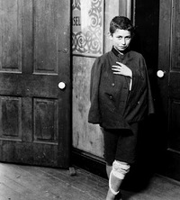
La Fundación Mapfre acoge desde el sábado una retrospectiva del fotógrafo norteamericano Lewis Hine, figura clave del documentalismo social. Que podrán visitarse hasta el 29 de abril en la sede de la Fundación Mapfre en el Paseo de Recoletos 23.
Sus series de fotografías de la isla de Ellis -puerta de entrada de la emigración que afluía torrencialmente a los Estados Unidos-, la construcción del Empire State o el trabajo infantil a lo largo de todo el país, forman ya un documento indispensable para entender la historia social de ese periodo.
El fotógrafo norteamericano Lewis Hine (Wisconsin, 1874 – Nueva York, 1940), una de las figuras claves de la estética del documentalismo social. FUNDACION MAPFRE, en colaboración con la George Eastman House (Rochester, Estados Unidos), depositaria del archivo de Lewis Hine, presenta la obra de un fotógrafo que, preocupado por el bienestar de los más desfavorecidos, recurrió a la imagen fotográfica para reflejar la injusticia y la miseria de la época.
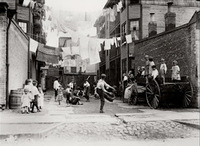
Esta exposición, compuesta por una selección de 170 imágenes –en su mayoría vintage-, ofrece un completo recorrido por su trayectoria fotográfica, y sitúa la obra de Hine en el contexto artístico, político y cultural de su tiempo, desde sus primeros retratos de inmigrantes desembarcando en Ellis Island (1904-1909, 1926) y niños trabajadores (1903- 1913), hasta su labor en Europa para la Cruz Roja americana a finales de la Primera Guerra Mundial (1918-1919), o su serie sobre la construcción del Empire State en Nueva York (1930-1931). Asimismo, el recorrido se acompaña de documentos y publicaciones de la época, algunos de ellos inéditos recientemente adquiridos por la George Eastman House, con los que Hine impulsó causas sociales como la mejora de la vivienda o la erradicación de los talleres de explotación ilegal.
Vinculado estrechamente a movimientos progresistas e instituciones humanitarias, Hine puso su cámara al servicio de la denuncia y la lucha por dignificar la vida de las clases trabajadoras.
Thu, 23 Feb 2012 06:10:22 PST
Hans Haacke muestra sus "Castillos en el aire" en el Museo Reina Sofía.
Hans Haacke muestra sus "Castillos en el aire" en el Museo Reina Sofía.
Ya podemos disfrutar de una muestra de 40 obras de Hans Haacke abierta en el Museo Reina Sofía. El proyecto Castillos en el aire (2012), concebido específicamente para el Museo Reina Sofía, tiene en cuenta la realidad de un barrio del extrarradio madrileño, el Ensanche de Vallecas, donde Haacke encuentra las imágenes de las ruinas que corresponden a nuestra sociedad contemporánea. Junto a las escrituras inmobiliarias de hipotecas, planos, edificios, calles vacías, destaca los nombres de las mismas, dedicados a los principales movimientos artísticos del siglo XX.Hans Haacke ha realizado expresamente la obra “Castillos en el aire” para escenificar esta exposición. Se trata de una gran instalación de la que forman parte nueve trabajos de otros autores. Hans Haacke (Colonia, 1936) es un destacado representante de la llamada crítica institucional surgida a finales de los años 70; una especie de ‘antisistema’ pegado el sistema que se ha caracterizado por cuestionar el uso comercial y propagandístico que se ha dado al arte y al artista.La presente exposición se divide en dos ámbitos: una muestra de obras anteriores del artista, análisis y reflexiones sobre mercado y globalización, en que las instituciones contribuyen a alterar el valor económico del arte, neutralizando su potencial subversivo como The Invisible Hand of the Market (2009); la relación entre arte, patrocinio y publicidad en la pretensión de adquirir imágenes corporativas respetables en Thank you Payne Webber (1979), Global Marketing (1986-2011) o Helmsboro Country (1990); o lo espurio del discurso institucional, que percibe el arte como lubricante social para la aceptación de las actuales dinámicas económico-políticas descrito en On social Grease (1975) o Broken R M (1986). El proyecto Castillos en el aire (2012), concebido específicamente para el Museo Reina Sofía completa la muestra.
Hans Haacke (Colonia, 1936) es considerado pionero de la llamada crítica institucional, vertiente del arte conceptual, surgida a finales de los años sesenta. Formado y residente en los Estados Unidos, su obra transita de un puro conceptualismo inicial hacia un discurso crítico. Sus obras cuestionan los mecanismos y funciones de las instituciones culturales, políticas y económicas, que manifiestan ser herramientas activas en la construcción y transmisión de valores identitarios e ideológicos favorables al discurso y expansión de la globalización. Construye sistemas de relación mediante elementos literales tomados del cotidiano, cuyo significado crítico emerge por colisión simbólica al ser yuxtapuestos, procurando, más que denunciar, dejar ver la relación entre arte y comportamiento social.
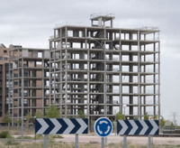
Ya podemos disfrutar de una muestra de 40 obras de Hans Haacke abierta en el Museo Reina Sofía. El proyecto Castillos en el aire (2012), concebido específicamente para el Museo Reina Sofía, tiene en cuenta la realidad de un barrio del extrarradio madrileño, el Ensanche de Vallecas, donde Haacke encuentra las imágenes de las ruinas que corresponden a nuestra sociedad contemporánea. Junto a las escrituras inmobiliarias de hipotecas, planos, edificios, calles vacías, destaca los nombres de las mismas, dedicados a los principales movimientos artísticos del siglo XX.
Hans Haacke ha realizado expresamente la obra “Castillos en el aire” para escenificar esta exposición. Se trata de una gran instalación de la que forman parte nueve trabajos de otros autores. Hans Haacke (Colonia, 1936) es un destacado representante de la llamada crítica institucional surgida a finales de los años 70; una especie de ‘antisistema’ pegado el sistema que se ha caracterizado por cuestionar el uso comercial y propagandístico que se ha dado al arte y al artista.
La presente exposición se divide en dos ámbitos: una muestra de obras anteriores del artista, análisis y reflexiones sobre mercado y globalización, en que las instituciones contribuyen a alterar el valor económico del arte, neutralizando su potencial subversivo como The Invisible Hand of the Market (2009); la relación entre arte, patrocinio y publicidad en la pretensión de adquirir imágenes corporativas respetables en Thank you Payne Webber (1979), Global Marketing (1986-2011) o Helmsboro Country (1990); o lo espurio del discurso institucional, que percibe el arte como lubricante social para la aceptación de las actuales dinámicas económico-políticas descrito en On social Grease (1975) o Broken R M (1986). El proyecto Castillos en el aire (2012), concebido específicamente para el Museo Reina Sofía completa la muestra.
Hans Haacke (Colonia, 1936) es considerado pionero de la llamada crítica institucional, vertiente del arte conceptual, surgida a finales de los años sesenta. Formado y residente en los Estados Unidos, su obra transita de un puro conceptualismo inicial hacia un discurso crítico. Sus obras cuestionan los mecanismos y funciones de las instituciones culturales, políticas y económicas, que manifiestan ser herramientas activas en la construcción y transmisión de valores identitarios e ideológicos favorables al discurso y expansión de la globalización. Construye sistemas de relación mediante elementos literales tomados del cotidiano, cuyo significado crítico emerge por colisión simbólica al ser yuxtapuestos, procurando, más que denunciar, dejar ver la relación entre arte y comportamiento social.
Wed, 22 Feb 2012 01:02:41 PST
Realidad y fantasía del artista Alfonso Ruano en el Museo ABC de Dibujo e Ilustración de Madrid.
Realidad y fantasía del artista Alfonso Ruano en el Museo ABC de Dibujo e Ilustración de Madrid.
El Museo ABC de Dibujo e Ilustración de Madrid presenta Primer Recuento, la primera retrospectiva de la obra de Alfonso Ruano, referente esencial en la ilustración de libros infantiles en España. Organizada por la Fundación SM junto a “i con i”, la exposición recorre tres décadas de creación que trasladan al visitante a un universo particular poblado de historias y emociones.
La muestra, que lleva por título Alfonso Ruano. Ilustraciones. Primer Recuento, recoge 47 ilustraciones originales realizadas desde 1984 hasta 2010, que aparecen en 11 libros: El Señor Viento Norte, El Caballo Fantástico, Zapatones, El Circo de Paco, El Guardián del Olvido, La Composición, El Pequeño Títere, Insomnio, Tiempo de Vuelo, Dunas de Agua y El Hada del Agua.
Se trata de imágenes cargadas de realidad y fantasía, memoria propia y común, búsquedas y encuentros donde el tiempo es a la vez hilo conductor y protagonista. Pasado, presente y futuro transitan entre las figuras y sugieren preguntas que permiten ampliar la mirada. Así, las historias e imágenes saltan del libro y de la carpeta a la pared del Museo, convirtiéndose en un viaje por el proceso creativo de la narración en imágenes.
Además, Primer Recuento es un hermoso ejemplo de la evolución de la edición de álbumes ilustrados en España desde los años 80 hasta ahora, donde el paseo del tiempo se puede apreciar en los cambios de tipografía, impresión, colores, composición, materiales, etc.
Alfonso Ruano ha trasladado a imágenes los cuentos de autores como Michael Ende, Gustavo Martín Garzo, Carmen Posadas o Antonio Skármeta. Con varias decenas de libros publicados, con ediciones en diversos países de Europa, América y Asia y traducidas a múltiples idiomas, el ilustrador ha obtenido algunos de los más prestigiosos premios de ilustración por títulos como: El Caballo Fantástico (Premio Lazarillo 1985 y Premio Nacional de Ilustración 1986), El guardián del olvido (Premio Catalonia 1990, seleccionada como una de las cien obras indispensables de la Literatura Infantil española del siglo XX) o La composición (con los premios de la Biblioteca del Congreso de EE.UU y de la Unesco en el 2000). Hoy es un referente para las nuevas generaciones de ilustradores.« Una muestra de ilustraciones pide detenerse, mirar y dedicar mayor atención a la forma, a la geometría, a los rasgos y gestos de todo lo representado. Conviene, además, rastrear el reflejo del tiempo en el uso de la secuencia, influencia directa de la historieta y el cine, en el sentido de los encuadres, en la fragmentación y la acumulación, en la influencia del ojo fotográfico y su momento decisivo. Lo que en foto es un instante, en pintura es una parálisis.»
19.01.12 - 04.03.12
MUSEO ABC
Amaniel, 29-31
Madrid
www.museoabc.es
Entrada gratuita
El Museo ABC de Dibujo e Ilustración de Madrid presenta Primer Recuento, la primera retrospectiva de la obra de Alfonso Ruano, referente esencial en la ilustración de libros infantiles en España. Organizada por la Fundación SM junto a “i con i”, la exposición recorre tres décadas de creación que trasladan al visitante a un universo particular poblado de historias y emociones.
La muestra, que lleva por título Alfonso Ruano. Ilustraciones. Primer Recuento, recoge 47 ilustraciones originales realizadas desde 1984 hasta 2010, que aparecen en 11 libros: El Señor Viento Norte, El Caballo Fantástico, Zapatones, El Circo de Paco, El Guardián del Olvido, La Composición, El Pequeño Títere, Insomnio, Tiempo de Vuelo, Dunas de Agua y El Hada del Agua.
Se trata de imágenes cargadas de realidad y fantasía, memoria propia y común, búsquedas y encuentros donde el tiempo es a la vez hilo conductor y protagonista. Pasado, presente y futuro transitan entre las figuras y sugieren preguntas que permiten ampliar la mirada. Así, las historias e imágenes saltan del libro y de la carpeta a la pared del Museo, convirtiéndose en un viaje por el proceso creativo de la narración en imágenes.
Además, Primer Recuento es un hermoso ejemplo de la evolución de la edición de álbumes ilustrados en España desde los años 80 hasta ahora, donde el paseo del tiempo se puede apreciar en los cambios de tipografía, impresión, colores, composición, materiales, etc.
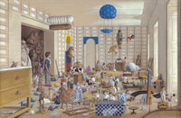
Alfonso Ruano ha trasladado a imágenes los cuentos de autores como Michael Ende, Gustavo Martín Garzo, Carmen Posadas o Antonio Skármeta. Con varias decenas de libros publicados, con ediciones en diversos países de Europa, América y Asia y traducidas a múltiples idiomas, el ilustrador ha obtenido algunos de los más prestigiosos premios de ilustración por títulos como: El Caballo Fantástico (Premio Lazarillo 1985 y Premio Nacional de Ilustración 1986), El guardián del olvido (Premio Catalonia 1990, seleccionada como una de las cien obras indispensables de la Literatura Infantil española del siglo XX) o La composición (con los premios de la Biblioteca del Congreso de EE.UU y de la Unesco en el 2000). Hoy es un referente para las nuevas generaciones de ilustradores.
« Una muestra de ilustraciones pide detenerse, mirar y dedicar mayor atención a la forma, a la geometría, a los rasgos y gestos de todo lo representado. Conviene, además, rastrear el reflejo del tiempo en el uso de la secuencia, influencia directa de la historieta y el cine, en el sentido de los encuadres, en la fragmentación y la acumulación, en la influencia del ojo fotográfico y su momento decisivo. Lo que en foto es un instante, en pintura es una parálisis.»
19.01.12 - 04.03.12
MUSEO ABC
Amaniel, 29-31
Madrid
www.museoabc.es
Entrada gratuita
Mon, 20 Feb 2012 04:34:19 PST
Madrid-Barajas acoge la exposición ‘Laugh me’, con obras de Pablo Puyol.
Madrid-Barajas acoge la exposición ‘Laugh me’, con obras de Pablo Puyol.
El Aeropuerto de Madrid-Barajas continúa fomentando la presencia del arte en sus instalaciones con la inauguración de una nueva exposición que presenta al público obras del artista madrileño Pablo Puyol Cuesta.
El Aeropuerto de Madrid-Barajas sigue siendo un lugar clave para el turismo, os dejo un artículo recientemente publicado sobre vuelos baratos, con los resultados de un Estudio sobre las 50 aerolíneas más baratas del mundo.
Volviendo a la exposición, en esta ocasión, la muestra elegida para ser expuesta en el Aeropuerto recoge, bajo el título de ‘Laugh me’, una colección de retratos creada por el artista durante su estancia en Berlín, que se expone por primera vez al público.
Las pinturas, realizadas con pintura acrílica sobre planchas de aluminio o acero inoxidable, recogen primeros planos del rostro de amigos del artista con un estilo y paleta decolores que recuerdan, en cierto modo, al arte pop. La exposición, formada por un total de 20 obras, se completa con una serie de paisajes en gran formato.
La muestra, situada en el pasillo que da acceso a la Terminal T2 del Aeropuerto desde el Metro y el Parking P2, podrá ser disfrutada por pasajeros y visitantes hasta el 31 de marzo.
El Aeropuerto de Madrid-Barajas continúa fomentando la presencia del arte en sus instalaciones con la inauguración de una nueva exposición que presenta al público obras del artista madrileño Pablo Puyol Cuesta.
El Aeropuerto de Madrid-Barajas sigue siendo un lugar clave para el turismo, os dejo un artículo recientemente publicado sobre vuelos baratos, con los resultados de un Estudio sobre las 50 aerolíneas más baratas del mundo.
Volviendo a la exposición, en esta ocasión, la muestra elegida para ser expuesta en el Aeropuerto recoge, bajo el título de ‘Laugh me’, una colección de retratos creada por el artista durante su estancia en Berlín, que se expone por primera vez al público.
Las pinturas, realizadas con pintura acrílica sobre planchas de aluminio o acero inoxidable, recogen primeros planos del rostro de amigos del artista con un estilo y paleta decolores que recuerdan, en cierto modo, al arte pop. La exposición, formada por un total de 20 obras, se completa con una serie de paisajes en gran formato.
La muestra, situada en el pasillo que da acceso a la Terminal T2 del Aeropuerto desde el Metro y el Parking P2, podrá ser disfrutada por pasajeros y visitantes hasta el 31 de marzo.
Sat, 18 Feb 2012 23:56:40 PST
JUSTMADRID, IIII Edición de la feria de arte contemporáneo emergente, del 16 al 19 de febrero
JUSTMADRID, IIII Edición de la feria de arte contemporáneo emergente, del 16 al 19 de febrero
La feria de arte contemporáneo internacional, JustMad celebra su tercera edición en el párking del Hotel Silken Puerta de América de Madrid, entre el 16 y el 19 de febrero. JustMad comenzó su andadura en el Matadero, la edición pasada se celebró en un piso 'okupado' del barrio Salamanca y ahora en el hotel. Esta feria ya se ha erigido con un nombre internacional y ha congregado a un total de 80 expositores en esta edición.
JUSTMAD sigue creciendo, más de 80 expositores entre galerías del programa general y galerías y escuelas de diseño, que ocuparán este año el parking del Hotel Silken Puerta América. Ciudades como Lisboa, Varsovia, Bogotá, Guayaquil y Ílhavo entre otras, serán representadas.
Cada galería cuenta con un espacio de 20 metros y un máximo de tres artistas por cada stand. Siguiendo la línea del año pasado, JUSTMAD3 continua con su reconocido equipo de comisarios formado Rocío Bardin, para el diseño y Javier Duero, Martí Manen, Luiza Teixeira de Freitas y que junto con Giulietta Speranza, directora artística de Art Fairs garantiza la exhibición internacional e innovadora de la feria. JUSTMAD nace como una necesidad fruto de la experiencia de las distintas ferias de arte contemporáneo que tienen lugar a nivel internacional. JUSTMAD3 es una feria pensada para un público tanto conocedor como público nuevo interesado en el arte contemporáneo y emergente. Es un espacio donde las galerías apuestan por los artistas y dan a conocer su trabajo a todos los representantes de instituciones, museos españoles y extranjeros, convirtiéndose en foro abierto para todos los agentes del mundo del arte, donde poder intercambiar y compartir ideas, opiniones y sensaciones, tanto a nivel nacional como internacional.Tras el éxito de público y de nivel artístico alcanzado en sus dos primeras ediciones, JUSTMAD3 busca en 2012 consolidar su posición como la principal feria española dedicada al arte contemporáneo emergente. En la primera edición JUSTMAD reunió a más de 7.000 visitantes; en la segunda edición el número creció hasta 18.000 visitantes. Este hecho empuja para seguir apostando en conseguir y mantener un público fiel año tras año.
La selección de galerías no se realiza por ningún tipo de corte de antigüedad de las mismas, sino por la calidad de su trabajo en general y del proyecto que proponen a la feria. Son galerías que apuestan por nuevos artistas y por lenguajes emergentes.
JUSTMAD, no solo apuesta por las ventas sino también por la promoción transformándose en un lugar de encuentro para el descubrimiento del trabajo de los artistas, donde damos la oportunidad a los visitantes de consolidar una interacción de “tu a tu” con los artistas y así poder conocer mas a fondo su obra en el stand de la galería que le representa.
En esta edición contamos con 70 galerías participantes de las cuales 20 son extranjeras. En la Sección Producers’Desk participarán 12 instituciones de las cuales 5 son internacionales. En el Publishers’Corner podremos descubrir 15 editoriales especializadas de las de las cuales 8 son extranjeras.
Entre las novedades, cabe destacar las visitas guiadas para el público general del crítico y curador cubano Andrés Isaac Santana, que nos llegará de la mano por las obras de los artistas latinoamericanos
representados por las galerías de programa oficial
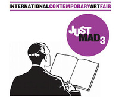
La feria de arte contemporáneo internacional, JustMad celebra su tercera edición en el párking del Hotel Silken Puerta de América de Madrid, entre el 16 y el 19 de febrero. JustMad comenzó su andadura en el Matadero, la edición pasada se celebró en un piso 'okupado' del barrio Salamanca y ahora en el hotel. Esta feria ya se ha erigido con un nombre internacional y ha congregado a un total de 80 expositores en esta edición.
JUSTMAD sigue creciendo, más de 80 expositores entre galerías del programa general y galerías y escuelas de diseño, que ocuparán este año el parking del Hotel Silken Puerta América. Ciudades como Lisboa, Varsovia, Bogotá, Guayaquil y Ílhavo entre otras, serán representadas.
Cada galería cuenta con un espacio de 20 metros y un máximo de tres artistas por cada stand. Siguiendo la línea del año pasado, JUSTMAD3 continua con su reconocido equipo de comisarios formado Rocío Bardin, para el diseño y Javier Duero, Martí Manen, Luiza Teixeira de Freitas y que junto con Giulietta Speranza, directora artística de Art Fairs garantiza la exhibición internacional e innovadora de la feria. JUSTMAD nace como una necesidad fruto de la experiencia de las distintas ferias de arte contemporáneo que tienen lugar a nivel internacional. JUSTMAD3 es una feria pensada para un público tanto conocedor como público nuevo interesado en el arte contemporáneo y emergente. Es un espacio donde las galerías apuestan por los artistas y dan a conocer su trabajo a todos los representantes de instituciones, museos españoles y extranjeros, convirtiéndose en foro abierto para todos los agentes del mundo del arte, donde poder intercambiar y compartir ideas, opiniones y sensaciones, tanto a nivel nacional como internacional.
Tras el éxito de público y de nivel artístico alcanzado en sus dos primeras ediciones, JUSTMAD3 busca en 2012 consolidar su posición como la principal feria española dedicada al arte contemporáneo emergente. En la primera edición JUSTMAD reunió a más de 7.000 visitantes; en la segunda edición el número creció hasta 18.000 visitantes. Este hecho empuja para seguir apostando en conseguir y mantener un público fiel año tras año.
La selección de galerías no se realiza por ningún tipo de corte de antigüedad de las mismas, sino por la calidad de su trabajo en general y del proyecto que proponen a la feria. Son galerías que apuestan por nuevos artistas y por lenguajes emergentes.
JUSTMAD, no solo apuesta por las ventas sino también por la promoción transformándose en un lugar de encuentro para el descubrimiento del trabajo de los artistas, donde damos la oportunidad a los visitantes de consolidar una interacción de “tu a tu” con los artistas y así poder conocer mas a fondo su obra en el stand de la galería que le representa.
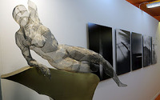
En esta edición contamos con 70 galerías participantes de las cuales 20 son extranjeras. En la Sección Producers’Desk participarán 12 instituciones de las cuales 5 son internacionales. En el Publishers’Corner podremos descubrir 15 editoriales especializadas de las de las cuales 8 son extranjeras.
Entre las novedades, cabe destacar las visitas guiadas para el público general del crítico y curador cubano Andrés Isaac Santana, que nos llegará de la mano por las obras de los artistas latinoamericanos
representados por las galerías de programa oficial
Fri, 10 Feb 2012 11:55:32 PST
Exposición ‘Picasso. El eterno femenino’ en el Canal de Isabel II.
Exposición ‘Picasso. El eterno femenino’ en el Canal de Isabel II.
La Fundación Canal sigue impresionandonos con sus magníficas exposiciones, en este caso nos maravilla con una muestra de 66 grabados centrados en la figura de la mujer, uno de los temas iconográficos de Picasso. Realizados entre 1927 y 1964, en ellos el artista malagueño plasma la figura femenina desde la admiración y el afán por comprender.La exposición nos presenta distintos ángulos desde los que se plasma la figura de la mujer. El artista personifica estas presencias femeninas desde múltiples ópticas: renacentista, barroca o cubista donde aparecen mujeres sentadas a modo de los retratos cortesanos, posando para artistas, observando o siendo observadas, jóvenes y maduras, con vestimentas de otros siglos y otros ámbitos o completamente actuales... Esta multiplicidad de modelos femeninos se plasma en las catorce secciones en las que se articula esta exposición en las que los grabados ilustran, además, las distintas técnicas de la obra gráfica de Picasso.Dividida en catorce secciones, en la muestra podemos encontrar las diversas maneras en las que el artista trata de captar a la mujer: desde una óptica cubista, en actitud cortesana, posando para artistas, observando o siendo observadas, con vestidos de distintas épocas y de diferentes edades.
La exposición estará en la Fundación Canal (c/ Mateo Inurria, 2) hasta el próximo 8 de abril. Los visitantes de la muestra también podrán disfrutar la exposición que la Fundación Canal está dedicando al genio de Leonardo da Vinci.
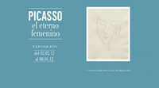
La Fundación Canal sigue impresionandonos con sus magníficas exposiciones, en este caso nos maravilla con una muestra de 66 grabados centrados en la figura de la mujer, uno de los temas iconográficos de Picasso. Realizados entre 1927 y 1964, en ellos el artista malagueño plasma la figura femenina desde la admiración y el afán por comprender.
La exposición nos presenta distintos ángulos desde los que se plasma la figura de la mujer. El artista personifica estas presencias femeninas desde múltiples ópticas: renacentista, barroca o cubista donde aparecen mujeres sentadas a modo de los retratos cortesanos, posando para artistas, observando o siendo observadas, jóvenes y maduras, con vestimentas de otros siglos y otros ámbitos o completamente actuales... Esta multiplicidad de modelos femeninos se plasma en las catorce secciones en las que se articula esta exposición en las que los grabados ilustran, además, las distintas técnicas de la obra gráfica de Picasso.
Dividida en catorce secciones, en la muestra podemos encontrar las diversas maneras en las que el artista trata de captar a la mujer: desde una óptica cubista, en actitud cortesana, posando para artistas, observando o siendo observadas, con vestidos de distintas épocas y de diferentes edades.
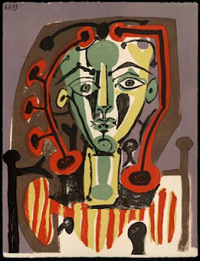
La exposición estará en la Fundación Canal (c/ Mateo Inurria, 2) hasta el próximo 8 de abril. Los visitantes de la muestra también podrán disfrutar la exposición que la Fundación Canal está dedicando al genio de Leonardo da Vinci.
Sat, 04 Feb 2012 08:44:51 PST
La Mona Lisa del Museo del Prado.
La Mona Lisa del Museo del Prado.
He de reconocer que esta noticia me ha sorprendido totalmente. Y no ha sido por el descubrimiento propiamente dicho, sino porque me cuesta entender cómo nadie se hubiera percatado antes de la importancia de la copia de "La Mona Lisa" que había en el Museo del Prado de Madrid. No estamos ante una mera copia del retrato de las muchas que hay por todo el mundo, sino de un verdadero retrato paralelo, algo así como una fotocopia ejecutada de forma simultánea por el alumno mientras el profesor pintaba su obra maestra.El Museo de El Prado de Madrid, tras un proceso de restauración de su copia del famoso cuadro de Leonardo Da Vinci 'La Gioconda', ha descubierto que su relevancia es mayor de la considerada hasta ahora, puesto que fue realizada en el propio taller del humanista italiano mientras este pintaba la original. Ya que han descubierto bajo el fondo negro del cuadro, añadido posteriormente, el mismo paisaje toscano que el de la 'Mona Lisa' del Louvre, y al estar esta copia en mejor estado de conservación, arroja luz sobre el enigmático cuadro de Lisa Gherardini. Con mayor nitidez en el "sfumato" creado por Da Vinci y una nueva luminosidad en el rostro de la retratada que hace considerar a La Mona Lisa no tan madura como se intuía en el original, el descubrimiento de esta copia ha sido certificado no solo por El Museo del Prado, sino también por el propio museo del Louvre.
La conclusión de que esta copia de 'La Gioconda' fue pintada simultáneamente y en el mismo taller de Da Vinci se ha obtenido al descubrir, mediante reflectografías con rayos infrarrojos, que las rectificaciones de la copia son prácticamente exactas a las que hizo Da Vinci, lo que hace pensar que el discípulo presenció el proceso de creación de la obra e introdujo los mismos cambios que su maestro. La obra siempre había sido fechada en el primer tercio del siglo XVI, como contemporánea a la obra de Da Vinci, pero ahora la autoría se divide entre dos de los alumnos más próximos al pinto.Con toda probabilidad, la obra será cedida temporalmente a sus colegas del museo parisiense por por los responsables del Prado. Allí será exhibida en la misma galería donde se encuentra la Gioconda, la obra más visitada del Louvre.Hay que subrayar, además, que el tamaño de original y réplica es prácticamente el mismo: 77 x 53 centímetros para el primero, y 76 x 57 para la segunda. El discípulo de Leonardo habría ejecutado la réplica a medida que el maestro toscano iba pintando el original en su estudio de Florencia, lo que además arrojará nuevas informaciones sobre la forma en que se trabajaba en los gabinetes de los grandes maestros.
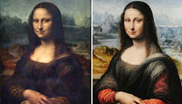
He de reconocer que esta noticia me ha sorprendido totalmente. Y no ha sido por el descubrimiento propiamente dicho, sino porque me cuesta entender cómo nadie se hubiera percatado antes de la importancia de la copia de "La Mona Lisa" que había en el Museo del Prado de Madrid. No estamos ante una mera copia del retrato de las muchas que hay por todo el mundo, sino de un verdadero retrato paralelo, algo así como una fotocopia ejecutada de forma simultánea por el alumno mientras el profesor pintaba su obra maestra.
El Museo de El Prado de Madrid, tras un proceso de restauración de su copia del famoso cuadro de Leonardo Da Vinci 'La Gioconda', ha descubierto que su relevancia es mayor de la considerada hasta ahora, puesto que fue realizada en el propio taller del humanista italiano mientras este pintaba la original. Ya que han descubierto bajo el fondo negro del cuadro, añadido posteriormente, el mismo paisaje toscano que el de la 'Mona Lisa' del Louvre, y al estar esta copia en mejor estado de conservación, arroja luz sobre el enigmático cuadro de Lisa Gherardini. Con mayor nitidez en el "sfumato" creado por Da Vinci y una nueva luminosidad en el rostro de la retratada que hace considerar a La Mona Lisa no tan madura como se intuía en el original, el descubrimiento de esta copia ha sido certificado no solo por El Museo del Prado, sino también por el propio museo del Louvre.
La conclusión de que esta copia de 'La Gioconda' fue pintada simultáneamente y en el mismo taller de Da Vinci se ha obtenido al descubrir, mediante reflectografías con rayos infrarrojos, que las rectificaciones de la copia son prácticamente exactas a las que hizo Da Vinci, lo que hace pensar que el discípulo presenció el proceso de creación de la obra e introdujo los mismos cambios que su maestro. La obra siempre había sido fechada en el primer tercio del siglo XVI, como contemporánea a la obra de Da Vinci, pero ahora la autoría se divide entre dos de los alumnos más próximos al pinto.
Con toda probabilidad, la obra será cedida temporalmente a sus colegas del museo parisiense por por los responsables del Prado. Allí será exhibida en la misma galería donde se encuentra la Gioconda, la obra más visitada del Louvre.
Hay que subrayar, además, que el tamaño de original y réplica es prácticamente el mismo: 77 x 53 centímetros para el primero, y 76 x 57 para la segunda. El discípulo de Leonardo habría ejecutado la réplica a medida que el maestro toscano iba pintando el original en su estudio de Florencia, lo que además arrojará nuevas informaciones sobre la forma en que se trabajaba en los gabinetes de los grandes maestros.
Sat, 04 Feb 2012 00:35:07 PST
Exposición "New York" fotografías de Yolanda Romero.
Exposición "New York" fotografías de Yolanda Romero.
La sala de exposiciones Hall UV de la Escuela de fotografía Ultravioleta (C/ Cavanilles, 21. Madrid) inauguró el día Jueves, 2 de febrero de 2012 su 39ª exposición; "New York" de la fotógrafa Yolanda Romero."New York" es una serie de fotografía analógica en blanco y negro inspirada en las películas de Woody Allen. En ella se evoca ese halo cinematográfico que envuelve a la ciudad que nunca duerme y que despierta los sentidos de quienes la pasean, cada rincón es un escenario viviente que hacen de Nueva York una ciudad fascinante, caótica y sobre todo pictórica.
Previo a la inauguración, Yolanda Romero y Ultravioleta realizaron una charla presentación de la autora y su obra; su forma de hacer, ver y entender la fotografía.
"New York" fotografías de Yolanda Romerodel 2 al 29 de febrero de 2012Escuela de fotografía Ultravioleta C/ Cavanilles, 21Madrid
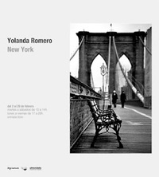
La sala de exposiciones Hall UV de la Escuela de fotografía Ultravioleta (C/ Cavanilles, 21. Madrid) inauguró el día Jueves, 2 de febrero de 2012 su 39ª exposición; "New York" de la fotógrafa Yolanda Romero.
"New York" es una serie de fotografía analógica en blanco y negro inspirada en las películas de Woody Allen. En ella se evoca ese halo cinematográfico que envuelve a la ciudad que nunca duerme y que despierta los sentidos de quienes la pasean, cada rincón es un escenario viviente que hacen de Nueva York una ciudad fascinante, caótica y sobre todo pictórica.
Previo a la inauguración, Yolanda Romero y Ultravioleta realizaron una charla presentación de la autora y su obra; su forma de hacer, ver y entender la fotografía.
"New York" fotografías de Yolanda Romero
del 2 al 29 de febrero de 2012
Escuela de fotografía Ultravioleta
C/ Cavanilles, 21
Madrid
Fri, 03 Feb 2012 04:14:51 PST
Exposición personal de Gustavo Acosta, raymaluz Art gallery.
Exposición personal de Gustavo Acosta, raymaluz Art gallery.
A partir del 14 de febrero podremos visitar la exposición "Duda" de Gustavo Acosta, raymaluz Art gallery.Duda, está compuesta por grandes lienzos impresionistas y dibujos que rivalizan con el dominio del espejo, probando así la capacidad simuladora del arte y su densidad tropológica. Las destilaciones del plan urbano, cada vez más abstractas al cabo de los años, presentan un código íntimo que sirve para expresar los recuerdos, la nostalgia y las emociones inherentes en su obra: el aislamiento, la añoranza, la enajenación, el miedo, la esperanza y la fantasía. Los espacios por él creados están cuidadosamente delineados, son totalmente creíbles, pero de alguna manera no son del todo correctos. Los dibuja y los pinta con exactitud de modo que, casi de una manera voyerista, podemos observar desde lo alto las calles y los litorales, como si tuviéramos el poder como espectadores de manipular lo que está sucediendo. Pero no vemos gente. No tenemos ninguna pista. No estamos seguros si es de noche o de día, ni dónde estamos. ¿Nos observamos a nosotros mismos, nuestras vidas y la historia de nuestra existencia? ¿Es éste el espejo que cuestionamos junto con el artista? Él devuelve la cuadrícula a la vida real a través de la pintura y transforma las proezas de ingeniería y arquitectura en el lienzo del artista. Luego imbuye la cuadrícula de anonimato y con éste, una sensación de fascinación y pérdida.Exposición Personal del artista cubano Gustavo Acosta.
raymaluz Art gallery
San Lorenzo 3, 28004 Madrid
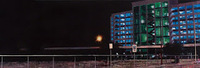
A partir del 14 de febrero podremos visitar la exposición "Duda" de Gustavo Acosta, raymaluz Art gallery.
Duda, está compuesta por grandes lienzos impresionistas y dibujos que rivalizan con el dominio del espejo, probando así la capacidad simuladora del arte y su densidad tropológica. Las destilaciones del plan urbano, cada vez más abstractas al cabo de los años, presentan un código íntimo que sirve para expresar los recuerdos, la nostalgia y las emociones inherentes en su obra: el aislamiento, la añoranza, la enajenación, el miedo, la esperanza y la fantasía. Los espacios por él creados están cuidadosamente delineados, son totalmente creíbles, pero de alguna manera no son del todo correctos. Los dibuja y los pinta con exactitud de modo que, casi de una manera voyerista, podemos observar desde lo alto las calles y los litorales, como si tuviéramos el poder como espectadores de manipular lo que está sucediendo. Pero no vemos gente. No tenemos ninguna pista. No estamos seguros si es de noche o de día, ni dónde estamos. ¿Nos observamos a nosotros mismos, nuestras vidas y la historia de nuestra existencia? ¿Es éste el espejo que cuestionamos junto con el artista? Él devuelve la cuadrícula a la vida real a través de la pintura y transforma las proezas de ingeniería y arquitectura en el lienzo del artista. Luego imbuye la cuadrícula de anonimato y con éste, una sensación de fascinación y pérdida.
Exposición Personal del artista cubano Gustavo Acosta.
raymaluz Art gallery
San Lorenzo 3,
28004
Madrid
Wed, 01 Feb 2012 01:46:09 PST
Exposición del artista georgiano Lasha Makharadze “ Hojas del Pasado ”.
Exposición del artista georgiano Lasha Makharadze “ Hojas del Pasado ”.
Exposición del artistageorgiano Lasha Makharadze “ Hojas del Pasado ”.
En el restaurante “Vía Appia”
c/ Unión 10, Madrid (entrada por c/ Vergara,frente al Teatro Real)
Metro: Ópera
Inauguración con cóctel: el miércoles 1 de Febrero a las 20:00
Exposición del artistageorgiano Lasha Makharadze “ Hojas del Pasado ”.
En el restaurante “Vía Appia”
c/ Unión 10, Madrid (entrada por c/ Vergara,frente al Teatro Real)
Metro: Ópera
Inauguración con cóctel: el miércoles 1 de Febrero a las 20:00
Thu, 26 Jan 2012 02:01:54 PST
Exposición "Shanghai: Lost Identity" en BlankPaper Escuela.
Exposición "Shanghai: Lost Identity" en BlankPaper Escuela.
BlankPaper Escuela es un espacio donde se combina la parte docente con otras actividades culturales como el comisariado de exposiciones de fotógrafos emergentes. Partiendo del punto de que son una escuela de fotografía, tienen un planteamiento diferente respecto al resto de galerías. Quieren hacer hincapié en el proceso creativo, destripando el trabajo y dejando al descubierto los descartes, apuntes, recortes... que se quedaron en el camino hasta llegar al resultado final. Es una manera diferente y muy interesante de ver una exposición, ya que tiene una parte didáctica muy importante.
Shanghai: Lost Identity, es la exposición que tienen actualmente, en la que el autor, Víctor Garrido, nos muestra desde un punto de vista muy personal la frenética carrera que está viviendo esta gran ciudad hacia el capitalismo más feroz, en la que destaca el boom de la construcción. BlankPaper Escuela Madrid
Nao 4, 3º 28004 Madrid 915 396 073
www.blankpaper.es
La exposición:Shanghai, como cabeza del “dragón chino”, está viviendo una frenética carrera hacia el capitalismo mas feroz, en la que destaca el boom de la construcción.
Existen personas para las que la vida en estas circunstancias no es fácil.
Ellos son testimonio de un Shanghai inhóspito y sin ventilación, envueltos en una pretendida civilización que les niega el derecho a ser y que se dedica a vaciarlos de su propia esencia provocando que resulte fácil imponerles nuevas ideas que se venden como progreso.
En definitiva, se trata de un ambicioso programa de transformación que debe dejar constancia ante el resto del mundo del evidente resurgimiento de China entre las grandes potencias
mundiales, pero que está dejando atrás cosas menos visibles, como lugares y habitantes que están perdiendo su identidad.
Una esquizofrénica doble personalidad se refleja en una ciudad fascinante que es en realidad una escenografía por la que pululan personajes que desconocen su papel.
En el mundo actual, domina un movimiento consciente que converge hacia la uniformidad y niega la identidad, creando lugares repletos de soledades y contrastes.
Es lógico que los lugares cambien de identidad, que de modo borroso fluyan hacia otra cosa, pero no por ello deben llegar a convertirse en ningún sitio.Texto de Antonio de la Torre
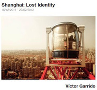
BlankPaper Escuela es un espacio donde se combina la parte docente con otras actividades culturales como el comisariado de exposiciones de fotógrafos emergentes. Partiendo del punto de que son una escuela de fotografía, tienen un planteamiento diferente respecto al resto de galerías. Quieren hacer hincapié en el proceso creativo, destripando el trabajo y dejando al descubierto los descartes, apuntes, recortes... que se quedaron en el camino hasta llegar al resultado final. Es una manera diferente y muy interesante de ver una exposición, ya que tiene una parte didáctica muy importante.
Shanghai: Lost Identity, es la exposición que tienen actualmente, en la que el autor, Víctor Garrido, nos muestra desde un punto de vista muy personal la frenética carrera que está viviendo esta gran ciudad hacia el capitalismo más feroz, en la que destaca el boom de la construcción.
BlankPaper Escuela Madrid
Nao 4, 3º 28004 Madrid 915 396 073
www.blankpaper.es
La exposición:
Shanghai, como cabeza del “dragón chino”, está viviendo una frenética carrera hacia el capitalismo mas feroz, en la que destaca el boom de la construcción.
Existen personas para las que la vida en estas circunstancias no es fácil.
Ellos son testimonio de un Shanghai inhóspito y sin ventilación, envueltos en una pretendida civilización que les niega el derecho a ser y que se dedica a vaciarlos de su propia esencia provocando que resulte fácil imponerles nuevas ideas que se venden como progreso.
En definitiva, se trata de un ambicioso programa de transformación que debe dejar constancia ante el resto del mundo del evidente resurgimiento de China entre las grandes potencias
mundiales, pero que está dejando atrás cosas menos visibles, como lugares y habitantes que están perdiendo su identidad.
Una esquizofrénica doble personalidad se refleja en una ciudad fascinante que es en realidad una escenografía por la que pululan personajes que desconocen su papel.
En el mundo actual, domina un movimiento consciente que converge hacia la uniformidad y niega la identidad, creando lugares repletos de soledades y contrastes.
Es lógico que los lugares cambien de identidad, que de modo borroso fluyan hacia otra cosa, pero no por ello deben llegar a convertirse en ningún sitio.
Texto de Antonio de la Torre
Tue, 06 Mar 2012 01:12:45 PST
"Historias sugeridas" de la fotógrafa Angélica Suela en Ultravioleta.
"Historias sugeridas" de la fotógrafa Angélica Suela en Ultravioleta.
La sala de exposiciones Hall UV de Ultravioleta Escuela (C/ Cavanilles, 21. Madrid) inaugura el día jueves, 1 de marzo de 2012 su 40ª exposición; "Historias sugeridas" de la fotógrafa Angélica Suela de la LLave.Historias sugeridas es una serie iniciada en 2010 y sobre la que Angélica sigue trabajando en la actualidad.A modo de story board, presenta una secuencia de imágenes que sugieren una historia, pero es el espectador el que la debe construir e interpretar.Cada elemento de esta serie no es una fotografía sino un conjunto de ellas. Son secuencias creadas después de la toma, como resultado de la libre asociación de imágenes. Las historias no tienen título. Los elementos que utiliza para “sugerir”, proceden de la atmósfera de la propia fotografía y del título descriptivo que acompaña cada imagen."Historias sugeridas" de Angélica Suela de la LLave.del 1 de marzo al 4 de abril de 2012. Entrada libre.
La sala de exposiciones Hall UV de Ultravioleta Escuela (C/ Cavanilles, 21. Madrid) inaugura el día jueves, 1 de marzo de 2012 su 40ª exposición; "Historias sugeridas" de la fotógrafa Angélica Suela de la LLave.
Historias sugeridas es una serie iniciada en 2010 y sobre la que Angélica sigue trabajando en la actualidad.
A modo de story board, presenta una secuencia de imágenes que sugieren una historia, pero es el espectador el que la debe construir e interpretar.
Cada elemento de esta serie no es una fotografía sino un conjunto de ellas. Son secuencias creadas después de la toma, como resultado de la libre asociación de imágenes. Las historias no tienen título. Los elementos que utiliza para “sugerir”, proceden de la atmósfera de la propia fotografía y del título descriptivo que acompaña cada imagen.
"Historias sugeridas" de Angélica Suela de la LLave.
del 1 de marzo al 4 de abril de 2012. Entrada libre.
Fri, 02 Mar 2012 06:26:07 PST
¿Por qué me gusta el teatro? Burundanga.
¿Por qué me gusta el teatro? Burundanga.
Quien quiera reírse sin para, quien quiera pasar un rato divertido y olvidarse de sus problemas, quien quiera disfrutar del teatro, que no dude en ir a ver Burundanga en el Teatro Maravillas. Excepcional actuación de Marta Poveda (algunos la recordaréis de cuando salía en la televisión en "Escenas de matrimonio"), alma de esta obra de teatro que da una clase de interpretación difícil de olvidar.La obra es una comedia de Jordi Galcerán (“El método Gronholm”) que nos habla sobre una joven pareja de enamorados. Ella quiere saber todo sobre él pero no se atreve a preguntar. Su mejor amiga le ofrece una dosis del suero de la verdad: Burundanga. ¿La quiere? ¿Es él quien aparenta ser? ¿Es honrado, fiel y trabajador? ¿Y si oculta los peores secretos? ¿Y si no es lo que parece? ¿Es infiel? ¿Es un delincuente? ¿Y si fuera un terrorista?Sinopsis:Berta, una joven estudiante, está embarazada de Manel, su novio, pero todavía no se ha atrevido a decírselo.Y es que no sabe qué hacer. Por no saber, no sabe ni si su novio realmente la quiere.Silvia, su compañera de piso, le ofrece la solución: burundanga, la droga de la verdad, una sustancia que hace perder la voluntad a quien la toma y provoca la sinceridad más auténtica.Si se la administra a Manel podrá saber la verdad sobre todo aquello que desee. Y Berta lo hace, le da la droga a su novio y descubre no sólo lo que pretendía averiguar si no otra verdad mucho más inesperada que hace estallar un enredo de consecuencias imprevisibles.El Teatro Maravillas está en la calle Manuela Malasaña, cerca de las paradas de metro de Tribunal y Bilbao. Es una estupenda opción para ir con amigos o con tu pareja, no con niños. ¿Tienes un plan mejor para este fin de semana?Reparto:
Eloy Arenas, Mar Abascal,
Marta Poveda, Antonio Hortelano, César Camino.Director: Gabriel OlivaresAutor: Jordi Galcerán
Quien quiera reírse sin para, quien quiera pasar un rato divertido y olvidarse de sus problemas, quien quiera disfrutar del teatro, que no dude en ir a ver Burundanga en el Teatro Maravillas. Excepcional actuación de Marta Poveda (algunos la recordaréis de cuando salía en la televisión en "Escenas de matrimonio"), alma de esta obra de teatro que da una clase de interpretación difícil de olvidar.
La obra es una comedia de Jordi Galcerán (“El método Gronholm”) que nos habla sobre una joven pareja de enamorados. Ella quiere saber todo sobre él pero no se atreve a preguntar. Su mejor amiga le ofrece una dosis del suero de la verdad: Burundanga. ¿La quiere? ¿Es él quien aparenta ser? ¿Es honrado, fiel y trabajador? ¿Y si oculta los peores secretos? ¿Y si no es lo que parece? ¿Es infiel? ¿Es un delincuente? ¿Y si fuera un terrorista?
Sinopsis:
Berta, una joven estudiante, está embarazada de Manel, su novio, pero todavía no se ha atrevido a decírselo.Y es que no sabe qué hacer. Por no saber, no sabe ni si su novio realmente la quiere.
Silvia, su compañera de piso, le ofrece la solución: burundanga, la droga de la verdad, una sustancia que hace perder la voluntad a quien la toma y provoca la sinceridad más auténtica.
Si se la administra a Manel podrá saber la verdad sobre todo aquello que desee. Y Berta lo hace, le da la droga a su novio y descubre no sólo lo que pretendía averiguar si no otra verdad mucho más inesperada que hace estallar un enredo de consecuencias imprevisibles.
El Teatro Maravillas está en la calle Manuela Malasaña, cerca de las paradas de metro de Tribunal y Bilbao. Es una estupenda opción para ir con amigos o con tu pareja, no con niños.
¿Tienes un plan mejor para este fin de semana?
Reparto:
Eloy Arenas, Mar Abascal,
Marta Poveda, Antonio Hortelano, César Camino.
Director: Gabriel Olivares
Autor: Jordi Galcerán
Mon, 27 Feb 2012 09:44:29 PST
Exposición "Un paisaje holandés" en la Casa Encendida.
Exposición "Un paisaje holandés" en la Casa Encendida.
Parece que el buen tiempo ha llegado para quedarse en Madrid, un buen momento para venir en alguno de los numerosos vuelos baratos a Madrid, como los de la compañia Ryanair. Pues cuando lleguen no se olviden de visitar la exposición de la Casa Encendida.Alrededor de cuarenta de obras de una docena de creadores forman parte de un proyecto sobre las grandes transformaciones que sufrió el arte en los años sesenta y las secuelas que han dejado en las nuevas generaciones. No es una muestra sobre el paisaje, pero toma el nombre del género pictórico como metáfora para describir una panorámica concreta del arte realizado en los Paises Bajos en dos momentos determinados. Los años sesenta y setenta, en los que los artistas holandeses jugaron un papel fundamental, y la primera década del siglo XXI, en el que un grupo de artistas jóvenes redefinen el lenguaje conceptual, una estrategia que se ha convertido en uno de los géneros esenciales del arte.Una de las claves de la exposición es ver cómo se interpretan conceptos importados de los años sesenta como la desmaterialización o la autorreferencialidad, o prácticas basadas en repeticiones, permutaciones, sistemas, series... Los artistas de una y otra generación introducen nociones subjetivas contraviniendo las premisas del conceptual más severo. Así, se configura un paisaje en el que se impone lo poético, una lectura de la experiencia cotidiana que incurre con frecuencia en el absurdo y lo irracional a partir del escepticismo y la incertidumbre que depara nuestro tiempo.La exposición presta atención al trabajo solitario del artista en su estudio, sumergido en profundas disquisiciones en torno a la realidad y el modo en que ésta se representa. Estas reflexiones dejan mucho espacio al azar y están trufadas de errores y fracasos que son siempre bienvenidos. Cuando el artista sale al exterior es un flâneur expuesto a las contingencias de lo cotidiano, al accidente, al vacío.La muestra “Un paisaje holandés” está compuesta por los trabajos de Bas Jan Ader, Feiko Beckers, Gwenneth Boelens, Marinus Boezem, Stanley Brouwn, Jan Dibbets, Sharon Houkema, Martin In’t Veld, Katja Mater, Navid Nuur, Ger van Elk y Marijn van Kreij.Fuente: Casa Encendida
Parece que el buen tiempo ha llegado para quedarse en Madrid, un buen momento para venir en alguno de los numerosos vuelos baratos a Madrid, como los de la compañia Ryanair. Pues cuando lleguen no se olviden de visitar la exposición de la Casa Encendida.
Alrededor de cuarenta de obras de una docena de creadores forman parte de un proyecto sobre las grandes transformaciones que sufrió el arte en los años sesenta y las secuelas que han dejado en las nuevas generaciones. No es una muestra sobre el paisaje, pero toma el nombre del género pictórico como metáfora para describir una panorámica concreta del arte realizado en los Paises Bajos en dos momentos determinados. Los años sesenta y setenta, en los que los artistas holandeses jugaron un papel fundamental, y la primera década del siglo XXI, en el que un grupo de artistas jóvenes redefinen el lenguaje conceptual, una estrategia que se ha convertido en uno de los géneros esenciales del arte.
Una de las claves de la exposición es ver cómo se interpretan conceptos importados de los años sesenta como la desmaterialización o la autorreferencialidad, o prácticas basadas en repeticiones, permutaciones, sistemas, series... Los artistas de una y otra generación introducen nociones subjetivas contraviniendo las premisas del conceptual más severo. Así, se configura un paisaje en el que se impone lo poético, una lectura de la experiencia cotidiana que incurre con frecuencia en el absurdo y lo irracional a partir del escepticismo y la incertidumbre que depara nuestro tiempo.
La exposición presta atención al trabajo solitario del artista en su estudio, sumergido en profundas disquisiciones en torno a la realidad y el modo en que ésta se representa. Estas reflexiones dejan mucho espacio al azar y están trufadas de errores y fracasos que son siempre bienvenidos. Cuando el artista sale al exterior es un flâneur expuesto a las contingencias de lo cotidiano, al accidente, al vacío.
La muestra “Un paisaje holandés” está compuesta por los trabajos de Bas Jan Ader, Feiko Beckers, Gwenneth Boelens, Marinus Boezem, Stanley Brouwn, Jan Dibbets, Sharon Houkema, Martin In’t Veld, Katja Mater, Navid Nuur, Ger van Elk y Marijn van Kreij.
Fuente: Casa Encendida
Thu, 23 Feb 2012 01:31:15 PST
Noa Lidor en el MUSEO ABC de Madrid.
Noa Lidor en el MUSEO ABC de Madrid.
En su primera exposición individual en un museo español, Noa Lidor reúne obra anterior y tres nuevas instalaciones realizadas ex profeso para las salas del museo madrileño. En su práctica, Lidor utiliza a menudo objetos ya existentes, alterando sus usos previstos para crear nuevas narrativas. Las obras de la muestra personifican un sentido de paradoja, señalando la diferencia entre lo visual y lo táctil, la superficie y la profundidad, la duda y la creencia, el lenguaje y la experiencia genuina.Utensilios de costura, condimentos que salen de la cocina y piezas de ganchillo son los utensilios con las que la artista dibuja en sus nuevas instalaciones realizadas para la muestra. En 'Tank', cientos de dedales metálicos estarán incrustados en la pared, dejando sólo visible su espacio interior, formando un dibujo lineal de un tanque a tamaño real. Otra instalación, 'And indeed there will be time' incluirá una pila de doscientas tapetes tejidos a mano y un velador de madera. Y en una tercera instalación titulada 'I have heard the mermaids singing', un texto será convertido en código braille, explotado y recreado con pequeñas montañas de sal fina sobre una mesa de comedor de madera. La exhibición también incluirá una serie de dibujos en páginas de un libro en braille, así como una nueva serie de acuarelas llamada ‘Doubting Thomas’.De los trabajos anteriores que se podrán ver destaca la obra de 2010 Field (Andromeda), donde unas campanas de metal están incrustadas en un colchón doble, de forma que exponen su espacio interior, normalmente oculto. La ubicación y los distintos tamaños de las campanas corresponden a un mapa estelar que refleja la constelación de Andrómeda, llamada así por la princesa que, según la mitología griega, fue encadenada a una roca como sacrificio a un monstruo del mar.El trabajo de Noa Lidor se materializa en forma de dibujo, escultura e instalación. Y destaca por el uso poético y sensual de materiales humildes –como el papel, el yeso o la cera–, así como objetos cotidianos en el entorno doméstico –como el mobiliario de una casa familiar–, o los instrumentos musicales, que al ser manipulados por la artista, pierden su función original. La temática de su obra
se nutre de historias míticas y mitológicas que se transforman camaleónicamente adoptando idiosincrasias culturales, integrándose en las tradiciones populares de distintas comunidades aparentemente lejanas y dispares. Los códigos diseñados por el hombre para facilitar la comunicación y que, sin embargo, la entorpecen, son metáforas recurrentes que la artista evoca a través de los instrumentos mudos o la utilización del braille.SOBRE LA ARTISTA
Noa Lidor nació en Israel y reside en Londres. Su trabajo de los últimos años incluye encargos específicos para la Galería de Arte Abbot Hall en Kendal, Reino Unido (2011), la sala ‘Members Room’ de la Tate Modern en Londres (The Mammals - 2008-9) y el Museo de Arte Haifa en Haifa, Israel (Lighthouse - 2007-8).Su primera exhibición individual en España fue en la galería La Caja Blanca, en Palma de Mallorca (In the Chambers of the Sea - 2010), y, en ese mismo año, celebró una exhibición individual en Green Cardamom, Londres (This Dark Ceiling without a Star - 2010).La instalación ‘Till human voices wake us’ de Noa Lidor, producida por la galería La Caja Blanca y presentada el pasado febrero en JustMad, fue seleccionada como ganadora de la primera edición del Premio de Dibujo Museo ABC. Con sal, la artista dibuja –escribiendo en Braille–, un fragmento del poema “La canción de amor de J. Alfred Prufrock” de T.S. Eliot y evoca la forma de una alfombra. La elección se realizó entre los proyectos participantes en la feria de 2011 en los que el dibujo tenía un papel protagonista. El jurado estaba formado por Inmaculada Corcho –directora del Museo ABC de Dibujo e Ilustración–, Giulietta Speranza –directora de la feria JustMad–, y los comisarios independientes Ana Luiza Teixeira de Freitas, Martí Manen y Javier Duero.Actualmente, trabaja en una instalación site specific para el Museo Herbert F. Johnson en Ithaca, Nueva York, en la exposición colectiva 'Lines of control' (2012) . Lidor está graduada por la Academia
de Arte y Diseño Bezalel en Jerusalén (2001) y tiene un Máster en Bellas Artes por la Escuela de Arte y Diseño de Chelsea, Londres (2004).centro de arte / dibujo / ilustración
MUSEO ABCC/ AMANIEL 29-31MADRID
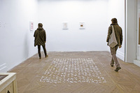
En su primera exposición individual en un museo español, Noa Lidor reúne obra anterior y tres nuevas instalaciones realizadas ex profeso para las salas del museo madrileño. En su práctica, Lidor utiliza a menudo objetos ya existentes, alterando sus usos previstos para crear nuevas narrativas. Las obras de la muestra personifican un sentido de paradoja, señalando la diferencia entre lo visual y lo táctil, la superficie y la profundidad, la duda y la creencia, el lenguaje y la experiencia genuina.
Utensilios de costura, condimentos que salen de la cocina y piezas de ganchillo son los utensilios con las que la artista dibuja en sus nuevas instalaciones realizadas para la muestra. En 'Tank', cientos de dedales metálicos estarán incrustados en la pared, dejando sólo visible su espacio interior, formando un dibujo lineal de un tanque a tamaño real. Otra instalación, 'And indeed there will be time' incluirá una pila de doscientas tapetes tejidos a mano y un velador de madera. Y en una tercera instalación titulada 'I have heard the mermaids singing', un texto será convertido en código braille, explotado y recreado con pequeñas montañas de sal fina sobre una mesa de comedor de madera. La exhibición también incluirá una serie de dibujos en páginas de un libro en braille, así como una nueva serie de acuarelas llamada ‘Doubting Thomas’.
De los trabajos anteriores que se podrán ver destaca la obra de 2010 Field (Andromeda), donde unas campanas de metal están incrustadas en un colchón doble, de forma que exponen su espacio interior, normalmente oculto. La ubicación y los distintos tamaños de las campanas corresponden a un mapa estelar que refleja la constelación de Andrómeda, llamada así por la princesa que, según la mitología griega, fue encadenada a una roca como sacrificio a un monstruo del mar.
El trabajo de Noa Lidor se materializa en forma de dibujo, escultura e instalación. Y destaca por el uso poético y sensual de materiales humildes –como el papel, el yeso o la cera–, así como objetos cotidianos en el entorno doméstico –como el mobiliario de una casa familiar–, o los instrumentos musicales, que al ser manipulados por la artista, pierden su función original. La temática de su obra
se nutre de historias míticas y mitológicas que se transforman camaleónicamente adoptando idiosincrasias culturales, integrándose en las tradiciones populares de distintas comunidades aparentemente lejanas y dispares. Los códigos diseñados por el hombre para facilitar la comunicación y que, sin embargo, la entorpecen, son metáforas recurrentes que la artista evoca a través de los instrumentos mudos o la utilización del braille.
SOBRE LA ARTISTA
Noa Lidor nació en Israel y reside en Londres. Su trabajo de los últimos años incluye encargos específicos para la Galería de Arte Abbot Hall en Kendal, Reino Unido (2011), la sala ‘Members Room’ de la Tate Modern en Londres (The Mammals - 2008-9) y el Museo de Arte Haifa en Haifa, Israel (Lighthouse - 2007-8).
Su primera exhibición individual en España fue en la galería La Caja Blanca, en Palma de Mallorca (In the Chambers of the Sea - 2010), y, en ese mismo año, celebró una exhibición individual en Green Cardamom, Londres (This Dark Ceiling without a Star - 2010).
La instalación ‘Till human voices wake us’ de Noa Lidor, producida por la galería La Caja Blanca y presentada el pasado febrero en JustMad, fue seleccionada como ganadora de la primera edición del Premio de Dibujo Museo ABC. Con sal, la artista dibuja –escribiendo en Braille–, un fragmento del poema “La canción de amor de J. Alfred Prufrock” de T.S. Eliot y evoca la forma de una alfombra. La elección se realizó entre los proyectos participantes en la feria de 2011 en los que el dibujo tenía un papel protagonista. El jurado estaba formado por Inmaculada Corcho –directora del Museo ABC de Dibujo e Ilustración–, Giulietta Speranza –directora de la feria JustMad–, y los comisarios independientes Ana Luiza Teixeira de Freitas, Martí Manen y Javier Duero.
Actualmente, trabaja en una instalación site specific para el Museo Herbert F. Johnson en Ithaca, Nueva York, en la exposición colectiva 'Lines of control' (2012) . Lidor está graduada por la Academia
de Arte y Diseño Bezalel en Jerusalén (2001) y tiene un Máster en Bellas Artes por la Escuela de Arte y Diseño de Chelsea, Londres (2004).
centro de arte / dibujo / ilustración
MUSEO ABC
C/ AMANIEL 29-31
MADRID
Mon, 20 Feb 2012 07:04:50 PST
Exposición individual de Eduardo Arroyo en el Círculo de Bellas Artes.
Exposición individual de Eduardo Arroyo en el Círculo de Bellas Artes.
Eduardo Arroyo (Madrid, 1937) es sin duda la figura clave de la «nueva figuración española» y uno de nuestros pintores más reconocidos, que sin embargo cobró protagonismo en el circuito artístico nacional tardíamente, a partir de los años 80, después de un alejamiento de dos décadas durante el régimen franquista. En París optó por la pintura figurativa en unos años de claro dominio de la pintura abstracta. De un uso matérico del color, Arroyo pasaría a una técnica más cercana al pop art. Su primer impacto público se produjo en 1963, al presentar en la III Bienal de París una serie de efigies de dictadores, que provocó las protestas del gobierno español. Actualmente, sus obras figuran en los mejores museos españoles e internacionales y su creatividad se extiende también al ámbito de las escenografías teatrales y las ediciones ilustradas, simultaneando las tareas de pintor y escritor.Esta exposición se sitúa en el interior mismo de su taller creativo, cuyas fronteras difusas y realidades desordenadas recuerdan a un caótico y laberíntico bazar.Con motivo de la muestra, el CBA ha producido una pieza audiovisual, Arroyo. Exposición individual, de 24 horas de duración, que se proyectará en el Cine Estudio. Se trata de un largo diálogo entre Eduardo Arroyo y Alberto Anaut en el que el artista repasa su vida, expone sus ideas y analiza los conflictos que ha vivido.Hasta el 20 de mayo.
Horario: de martes a sábados de 11:00 > 14:00 y de 17:00 > 21:00 domingos y festivos de 11:00 > 14:00 lunes cerradoMás información en el blog del CBA: http://www.circulobellasartes.com/blog/?p=1443
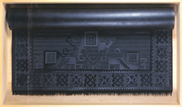
Eduardo Arroyo (Madrid, 1937) es sin duda la figura clave de la «nueva figuración española» y uno de nuestros pintores más reconocidos, que sin embargo cobró protagonismo en el circuito artístico nacional tardíamente, a partir de los años 80, después de un alejamiento de dos décadas durante el régimen franquista. En París optó por la pintura figurativa en unos años de claro dominio de la pintura abstracta. De un uso matérico del color, Arroyo pasaría a una técnica más cercana al pop art. Su primer impacto público se produjo en 1963, al presentar en la III Bienal de París una serie de efigies de dictadores, que provocó las protestas del gobierno español. Actualmente, sus obras figuran en los mejores museos españoles e internacionales y su creatividad se extiende también al ámbito de las escenografías teatrales y las ediciones ilustradas, simultaneando las tareas de pintor y escritor.
Esta exposición se sitúa en el interior mismo de su taller creativo, cuyas fronteras difusas y realidades desordenadas recuerdan a un caótico y laberíntico bazar.
Con motivo de la muestra, el CBA ha producido una pieza audiovisual, Arroyo. Exposición individual, de 24 horas de duración, que se proyectará en el Cine Estudio. Se trata de un largo diálogo entre Eduardo Arroyo y Alberto Anaut en el que el artista repasa su vida, expone sus ideas y analiza los conflictos que ha vivido.
Hasta el 20 de mayo.
Horario: de martes a sábados de 11:00 > 14:00 y de 17:00 > 21:00 domingos y festivos de 11:00 > 14:00 lunes cerrado
Más información en el blog del CBA: http://www.circulobellasartes.com/blog/?p=1443
Sun, 19 Feb 2012 00:06:56 PST
ARCO, la Feria Internacional de Arte Contemporáneo de Madrid.
ARCO, la Feria Internacional de Arte Contemporáneo de Madrid.
La Feria Internacional de Arte Contemporáneo, ARCOmadrid, es una de las grandes citas del mercado del arte de todo el mundo. Coleccionistas nacionales e internacionales han acudido a la Feria, donde se presentan una amplia selección de obras, tanto en cotizaciones como en técnicas, épocas y autores. La 31ª edición de ARCOmadrid se celebra en un momento en el que el mercado del arte está recuperando la confianza y el sector está experimentando crecimiento, como lo demuestran los resultados de las más recientes subastas y estudios.
ARCOmadrid presenta desde obras maestras de los autores más cotizados del siglo XX y XXI, hasta piezas de creadores emergentes, fotografía y obra gráfica, accesible para aquellos que quieran comenzar sus colecciones de arte contemporáneo. Una amplísima oferta que abarca las más diversas tendencias y técnicas, desde las más clásicas hasta las más innovadoras, de la mano de cerca de 3.000 artistas que presentarán las 215 galerías participantes.
Entre las piezas de mayor cotización que estarán presentes en ARCOmadrid se encuentran también varias obras del pintor catalán recientemente fallecido Antoni Tàpies. Además de las piezas de Antoni Tàpies que estarán expuestas en las galerías participantes, ARCOmadrid rendirá un homenaje al pintor a través de un gran muro de mensajes situado en el Pabellón 10. Galeristas, expertos, artistas y visitantes son invitados por la organización del certamen a dejar sus mensajes que serán entregados a la familia del artista al finalizar la Feria. El homenaje se completará con la proyección de un vídeo de RTVE sobre Antoni Tàpies.
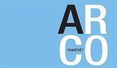
La Feria Internacional de Arte Contemporáneo, ARCOmadrid, es una de las grandes citas del mercado del arte de todo el mundo. Coleccionistas nacionales e internacionales han acudido a la Feria, donde se presentan una amplia selección de obras, tanto en cotizaciones como en técnicas, épocas y autores. La 31ª edición de ARCOmadrid se celebra en un momento en el que el mercado del arte está recuperando la confianza y el sector está experimentando crecimiento, como lo demuestran los resultados de las más recientes subastas y estudios.
ARCOmadrid presenta desde obras maestras de los autores más cotizados del siglo XX y XXI, hasta piezas de creadores emergentes, fotografía y obra gráfica, accesible para aquellos que quieran comenzar sus colecciones de arte contemporáneo. Una amplísima oferta que abarca las más diversas tendencias y técnicas, desde las más clásicas hasta las más innovadoras, de la mano de cerca de 3.000 artistas que presentarán las 215 galerías participantes.
Entre las piezas de mayor cotización que estarán presentes en ARCOmadrid se encuentran también varias obras del pintor catalán recientemente fallecido Antoni Tàpies. Además de las piezas de Antoni Tàpies que estarán expuestas en las galerías participantes, ARCOmadrid rendirá un homenaje al pintor a través de un gran muro de mensajes situado en el Pabellón 10. Galeristas, expertos, artistas y visitantes son invitados por la organización del certamen a dejar sus mensajes que serán entregados a la familia del artista al finalizar la Feria. El homenaje se completará con la proyección de un vídeo de RTVE sobre Antoni Tàpies.
Mon, 13 Feb 2012 12:27:14 PST
La magia de Chagall inunda Madrid.
La magia de Chagall inunda Madrid.
Organizada por el Museo Thyssen-Bornemisza y la Fundación Caja Madrid, y comisariada por Jean-Louis Prat, presidente del Comité Chagall, esta exposición será la primera gran retrospectiva dedicada al artista ruso en España. En nuestro país no se había visto bien su obra, unicamente una de 1999 en la Fundación Juan March de Madrid. Pero en esta ocasión podremos más de 150 piezas, de las distintas etapas del pintor, Chagall vivió hasta los 98 años. El principal objetivo de esta exposición es destacar el gran papel que su obra ocupa en la Historia del Arte. Las salas del Museo Thyssen-Bornemisza expondrán trabajos de sus primeros años y de su periodo en París, la capital de la vanguardia en ese momento; también se recogerá su experiencia en la Rusia revolucionaria y en Francia, hasta llegar al exilio forzado en Estados Unidos en 1941. En las salas de exposición de la Fundación Caja Madrid la atención se centrará en los grandes formatos, la escultura y la cerámica realizados a partir de su retorno a Francia después de la II Guerra Mundial. Llevó sus motivos fantásticos al techo de la ópera de París o sus murales a la Metropolitan Opera de Nueva York.
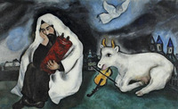
Organizada por el Museo Thyssen-Bornemisza y la Fundación Caja Madrid, y comisariada por Jean-Louis Prat, presidente del Comité Chagall, esta exposición será la primera gran retrospectiva dedicada al artista ruso en España. En nuestro país no se había visto bien su obra, unicamente una de 1999 en la Fundación Juan March de Madrid. Pero en esta ocasión podremos más de 150 piezas, de las distintas etapas del pintor, Chagall vivió hasta los 98 años. El principal objetivo de esta exposición es destacar el gran papel que su obra ocupa en la Historia del Arte.
Las salas del Museo Thyssen-Bornemisza expondrán trabajos de sus primeros años y de su periodo en París, la capital de la vanguardia en ese momento; también se recogerá su experiencia en la Rusia revolucionaria y en Francia, hasta llegar al exilio forzado en Estados Unidos en 1941.
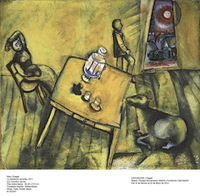
En las salas de exposición de la Fundación Caja Madrid la atención se centrará en los grandes formatos, la escultura y la cerámica realizados a partir de su retorno a Francia después de la II Guerra Mundial. Llevó sus motivos fantásticos al techo de la ópera de París o sus murales a la Metropolitan Opera de Nueva York.
Mon, 06 Feb 2012 00:34:40 PST
Nueva exposición de Chema Madoz en Madrid.
Nueva exposición de Chema Madoz en Madrid.
Chema Madoz es posiblemente nuestro fotógrafo más importante en la actualidad, en la galería Moriarty de Madrid, en el barrio de Chueca, podemos ver hasta el 29 de febrero 17 nuevas fotos en su característico blanco y negro, la mayoría de ellas de gran formato. Son obras creadas en los dos últimos años. Chema Madoz sigue fiel a su peculiar y exitoso estilo pero en esta ocasión ha recurrido a recursos digitales, algo inédito en su carrera. Se trata de una novedad en este artesano de la fotografía. Hasta ahora las imágenes las manipulaba el mismo, utilizando únicamente fotografía analógica. He de reconocer que no sé si me gusta esta evolución de Chema Madoz, personalmente prefería el uso exclusivo de la fotografía analógica.
No es la única novedad, los objetos que imagina Chema Madoz suelen tener una utilidad una función definida, en esta exposición algunas de las fotos expuestas carecen de carácter como objeto, no tienen uso, como en la obra en del avestruz que esconde la cabeza en su propio huevo. En otras obras si reconocemos al Madoz más clásico.
Chema Madoz (Madrid, 1958), fue premio Nacional de Fotografía en 2000, ha realizado numerosas exposiciones individuales por todo el mundo, su obra recoge imágenes extraídas de hábiles juegos de imaginación, en los que perspectivas y texturas tejen sus imágenes.
Galería Moriarty
Calle Libertad nº22
28004 madrid
De martés a sábado de 11:00 a 14:00 y 17:00 a 20:30
http://www.galeriamoriarty.com
Chema Madoz es posiblemente nuestro fotógrafo más importante en la actualidad, en la galería Moriarty de Madrid, en el barrio de Chueca, podemos ver hasta el 29 de febrero 17 nuevas fotos en su característico blanco y negro, la mayoría de ellas de gran formato. Son obras creadas en los dos últimos años. Chema Madoz sigue fiel a su peculiar y exitoso estilo pero en esta ocasión ha recurrido a recursos digitales, algo inédito en su carrera. Se trata de una novedad en este artesano de la fotografía. Hasta ahora las imágenes las manipulaba el mismo, utilizando únicamente fotografía analógica. He de reconocer que no sé si me gusta esta evolución de Chema Madoz, personalmente prefería el uso exclusivo de la fotografía analógica.
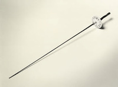
No es la única novedad, los objetos que imagina Chema Madoz suelen tener una utilidad una función definida, en esta exposición algunas de las fotos expuestas carecen de carácter como objeto, no tienen uso, como en la obra en del avestruz que esconde la cabeza en su propio huevo. En otras obras si reconocemos al Madoz más clásico.
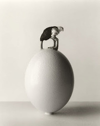
Chema Madoz (Madrid, 1958), fue premio Nacional de Fotografía en 2000, ha realizado numerosas exposiciones individuales por todo el mundo, su obra recoge imágenes extraídas de hábiles juegos de imaginación, en los que perspectivas y texturas tejen sus imágenes.
Galería Moriarty
Calle Libertad nº22
28004 madrid
De martés a sábado de 11:00 a 14:00 y 17:00 a 20:30
http://www.galeriamoriarty.com
Sat, 04 Feb 2012 04:15:11 PST
Exposición "Del muro a la tabla de skate". Derivas gráficas del colectivo Neighborhood Watch.
Exposición "Del muro a la tabla de skate". Derivas gráficas del colectivo Neighborhood Watch.
La exposición titulada Slight Flow, en referencia a una manera de fluir sutil y soterradamente que en su desenvolvimiento construye las conexiones, redes y referencias de las que se compone la auténtica CULTURA, muestra más de una decena de obras y dos instalaciones en las que el poderoso universo personal, fértil e indomable del artista implosiona y asume los riesgos del arte entendido como reacción alérgica, como algo que se segrega, inevitable y libre.
La pintura de Maíllo es un ejercicio corporal comprometido, una reflexión sobre lo marginal con la densidad teórica de Deleuze, la irreverencia de Johathan Meese, la ironía de Philip Guston y la bajada a los infiernos de Zoran Mušič. Desde su aislamiento voluntario en el extrarradio, entendido además como una forma de vida, Maíllo ejecuta su instinto más afinado logrando con ello una de las trayectorias emergentes más interesantes y consistentes del panorama actual.El Gabinete de Exposiciones del IED Madrid acoge del 2 al 20 de febrero de 2012 la muestra "Del muro a la tabla de skate". Derivas gráficas del colectivo Neighborhood Watch.
Dentro del mundo de la intervención urbana, el graffiti ha sido una de las manifestaciones creativas que ha gozado de mayor libertad y popularidad internacional. Han sido numerosas sus derivas formales y locales, así como varias sus fusiones con música, gráfica y movimientos urbanos, siendo la corriente skate sobre que pretende reflexionar esta exposición.
Hoy día esta imagen trasciende sus orígenes para influir en la estética contemporánea, siendo común su presencia en medios como los de la moda o la publicidad. Esta muestra analiza estas cuestiones a través de las obras de Asier, Didi León, Humo, Murphy, Naone, Negroariel, Posk, Sehu, Sera e Ysen, todo sellos pertenecientes al colectivo Neighborhood Watch.
3 al 20 de febrero de 2012
lunes – viernes | 10:00 – 21:00 Exposición
Gabinete de Exposiciones del Palacio de Altamira
IED Madrid
C/ Flor Alta 8
28004 Madrid
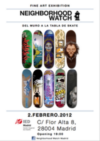
La exposición titulada Slight Flow, en referencia a una manera de fluir sutil y soterradamente que en su desenvolvimiento construye las conexiones, redes y referencias de las que se compone la auténtica CULTURA, muestra más de una decena de obras y dos instalaciones en las que el poderoso universo personal, fértil e indomable del artista implosiona y asume los riesgos del arte entendido como reacción alérgica, como algo que se segrega, inevitable y libre.
La pintura de
Maíllo es un ejercicio corporal comprometido, una reflexión sobre lo marginal con la densidad teórica de Deleuze, la irreverencia de Johathan Meese, la ironía de Philip Guston y la bajada a los infiernos de Zoran Mušič. Desde su aislamiento voluntario en el extrarradio, entendido además como una forma de vida, Maíllo ejecuta su instinto más afinado logrando con ello una de las trayectorias emergentes más interesantes y consistentes del panorama actual.
El
Gabinete de Exposiciones del IED Madrid acoge del 2 al 20 de febrero de 2012 la muestra "Del muro a la tabla de skate". Derivas gráficas del colectivo Neighborhood Watch.
Dentro del mundo de la intervención urbana, el graffiti ha sido una de las manifestaciones creativas que ha gozado de mayor libertad y popularidad internacional. Han sido numerosas sus derivas formales y locales, así como varias sus fusiones con música, gráfica y movimientos urbanos, siendo la corriente skate sobre que pretende reflexionar esta exposición.
Hoy día esta imagen trasciende sus orígenes para influir en la estética contemporánea, siendo común su presencia en medios como los de la moda o la publicidad. Esta muestra analiza estas cuestiones a través de las obras de Asier, Didi León, Humo, Murphy, Naone, Negroariel, Posk, Sehu, Sera e Ysen, todo sellos pertenecientes al colectivo Neighborhood Watch.
3 al 20 de febrero de 2012
lunes – viernes | 10:00 – 21:00 Exposición
Gabinete de Exposiciones del Palacio de Altamira
IED Madrid
C/ Flor Alta 8
28004 Madrid
Fri, 03 Feb 2012 07:16:41 PST
Viernes 3 de Febrero, Guillermo Martin Bermejo en Galeria ARANAPOVEDA. Inauguración a las 20h.
Viernes 3 de Febrero, Guillermo Martin Bermejo en Galeria ARANAPOVEDA. Inauguración a las 20h.
La obra de Guillermo Martín Bermejo (España, 1971) ha estado presente estos últimos años, tanto de forma individual como colectiva, en diferentes galerías de Europa y América. Entre otras, varias exposiciones individuales en la galería Travesía 4 de Madrid, Propaganda Portable Art Gallery, (Berlín), Galería Karin Sutter (Basel) o en la Bartels Fondation (Basel), La Central(Bogotá) , además de su participación en diversas ediciones de las ferias ARCO, MACO ,Scope Miami ó Scope Basel y en muestras institucionales de Berlin, Bogotá, México DF, La Casa Encendida y proyecto ABCD de Madrid.
En su obra los aspectos melancólicos y líricos de la adolescencia, representados en un mundo sexual y emocional, ambiguo y naif, pertenecientes en muchas ocasiones a los mitos al cuento popular o a la fábula, aparecen de forma recurrente. Esta indefinición está siempre presente, una ambigüedad perturbadora. Niños-efebo dibujados en pequeño formato sobre la calidez del papel y sus texturas.
“Paseo por el parque de los príncipes pálidos” es su primera exhibición individual en ARANAPOVEDA.
Galeria ARANAPOVEDAC/ Lope de Vega, 2228014 Madrid
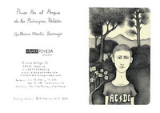
La obra de Guillermo Martín Bermejo (España, 1971) ha estado presente estos últimos años, tanto de forma individual como colectiva, en diferentes galerías de Europa y América. Entre otras, varias exposiciones individuales en la galería Travesía 4 de Madrid, Propaganda Portable Art Gallery, (Berlín), Galería Karin Sutter (Basel) o en la Bartels Fondation (Basel), La Central(Bogotá) , además de su participación en diversas ediciones de las ferias ARCO, MACO ,Scope Miami ó Scope Basel y en muestras institucionales de Berlin, Bogotá, México DF, La Casa Encendida y proyecto ABCD de Madrid.
En su obra los aspectos melancólicos y líricos de la adolescencia, representados en un mundo sexual y emocional, ambiguo y naif, pertenecientes en muchas ocasiones a los mitos al cuento popular o a la fábula, aparecen de forma recurrente. Esta indefinición está siempre presente, una ambigüedad perturbadora. Niños-efebo dibujados en pequeño formato sobre la calidez del papel y sus texturas.
“Paseo por el parque de los príncipes pálidos” es su primera exhibición individual en ARANAPOVEDA.
Galeria ARANAPOVEDA
C/ Lope de Vega, 22
28014 Madrid
Tue, 07 Feb 2012 03:20:52 PST
Exposición 'Madrid vs New York'.
Exposición 'Madrid vs New York'.
La exposición 'Madrid vs New York' muestra en el distrito de Tetuán los contrastes existentes entre los paisajes de ambas ciudades. Se trata de fotografías urbanas de Judit Aragonés e Ignacio Ordás que reflejan "paisajes llenos de contrastes, texturas, volúmenes que rompen perspectivas, líneas que cruzan límites, y llenos y vacíos descompensados". Ambos artistas tienen su estudio, Dinamik, en la Calle Limonero 18. Llevan años dedicándose a la gestión integral de proyectos arquitectónicos de proyección nacional e internacional
La muestra se puede visitar en la sala de exposiciones Pablo Serrano, ubicada en el número 357 de la calle Bravo Murillo de lunes a viernes de 9 a 14 horas y de 16 a 20 horas así como los sábados de 10 a 14 horas.
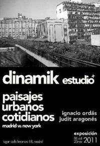
La exposición 'Madrid vs New York' muestra en el distrito de Tetuán los contrastes existentes entre los paisajes de ambas ciudades. Se trata de fotografías urbanas de Judit Aragonés e Ignacio Ordás que reflejan "paisajes llenos de contrastes, texturas, volúmenes que rompen perspectivas, líneas que cruzan límites, y llenos y vacíos descompensados". Ambos artistas tienen su estudio, Dinamik, en la Calle Limonero 18. Llevan años dedicándose a la gestión integral de proyectos arquitectónicos de proyección nacional e internacional
La muestra se puede visitar en la sala de exposiciones Pablo Serrano, ubicada en el número 357 de la calle Bravo Murillo de lunes a viernes de 9 a 14 horas y de 16 a 20 horas así como los sábados de 10 a 14 horas.
Fri, 27 Jan 2012 03:24:41 PST
'Ellas. Creadoras de los siglos XX y XXI', exposición sobre obras de artistas femeninas.
'Ellas. Creadoras de los siglos XX y XXI', exposición sobre obras de artistas femeninas.
La exposición 'Ellas. Creadoras de los siglos XX y XXI', que recorre la producción artística de distintas creadoras contemporáneas y que ha sido inaugurada hoy en Navalcarnero. La exposición, que ha sido organizada por la Comunidad de Madrid y que se enmarca en la Red de Exposiciones Itinerantes (Red Itiner), visitará, a partir del 24 de febrero, los municipios de Móstoles, Las Rozas, Leganés, Collado Villalba, Alcalá de Henares, Colmenar Viejo, Aranjuez, Navacerrada, Alcorcón, San Sebastián de los Reyes, Pinto, Alcobendas y Arganda del Rey. Las piezas, tanto de fotografía como de pintura, escultura o vídeo, se distribuyen en torno a dos secciones temáticas, 'En cuerpo y alma' e 'Interior/Exterior'.'En cuerpo y alma' reflexiona sobre la dicotomía existente entre ambos conceptos e incluye las creaciones de Frida Kahlo, Gisèle Freund, Marina Abramovic, Cindy Sherman, Paloma Navares, Concha García, Susy Gómez, Marina Núñez, Adriana Duque, Amparo Sard, Naia del Castillo, Victoria Diehl, Carmen Calvo y Concha Jerez.Por su parte, en 'Interior/Exterior' se exponen obras de Amalia Avia, Esther Ferrer, Isabel Quintanilla, Marisa González, Ouka Leele, Darya Von Berner, Montserrat Soto, Berta Jayo y Diana Larrea, que asumen diferentes posiciones ante la tensión que se produce entre las dos ideas.También se incluye paralelamente una selección de obras intimistas que representan objetos de la vida cotidiana y la esfera privada de las personas.A 'Ellas. Creadoras de los siglos XX y XXI' se suman otras cinco exposiciones que integran el programa de la Red Itiner para 2012: 'fotoCAM 2012'; 'Santos Yubero y su tiempo'; 'El cómic español contemporáneo', 'Recortables: sueños de papel' y "Paisajes de Madrid. Fernando Manso".
La exposición 'Ellas. Creadoras de los siglos XX y XXI', que recorre la producción artística de distintas creadoras contemporáneas y que ha sido inaugurada hoy en Navalcarnero. La exposición, que ha sido organizada por la Comunidad de Madrid y que se enmarca en la Red de Exposiciones Itinerantes (Red Itiner), visitará, a partir del 24 de febrero, los municipios de Móstoles, Las Rozas, Leganés, Collado Villalba, Alcalá de Henares, Colmenar Viejo, Aranjuez, Navacerrada, Alcorcón, San Sebastián de los Reyes, Pinto, Alcobendas y Arganda del Rey. Las piezas, tanto de fotografía como de pintura, escultura o vídeo, se distribuyen en torno a dos secciones temáticas, 'En cuerpo y alma' e 'Interior/Exterior'.
'En cuerpo y alma' reflexiona sobre la dicotomía existente entre ambos conceptos e incluye las creaciones de Frida Kahlo, Gisèle Freund, Marina Abramovic, Cindy Sherman, Paloma Navares, Concha García, Susy Gómez, Marina Núñez, Adriana Duque, Amparo Sard, Naia del Castillo, Victoria Diehl, Carmen Calvo y Concha Jerez.
Por su parte, en 'Interior/Exterior' se exponen obras de Amalia Avia, Esther Ferrer, Isabel Quintanilla, Marisa González, Ouka Leele, Darya Von Berner, Montserrat Soto, Berta Jayo y Diana Larrea, que asumen diferentes posiciones ante la tensión que se produce entre las dos ideas.
También se incluye paralelamente una selección de obras intimistas que representan objetos de la vida cotidiana y la esfera privada de las personas.
A 'Ellas. Creadoras de los siglos XX y XXI' se suman otras cinco exposiciones que integran el programa de la Red Itiner para 2012: 'fotoCAM 2012'; 'Santos Yubero y su tiempo'; 'El cómic español contemporáneo', 'Recortables: sueños de papel' y "Paisajes de Madrid. Fernando Manso".